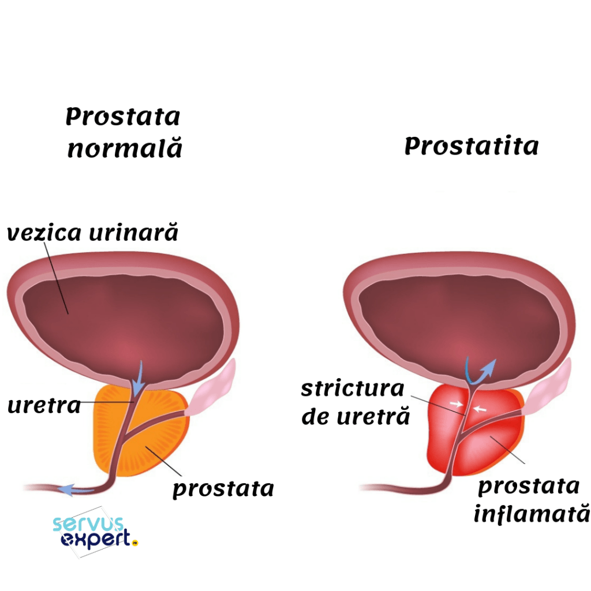
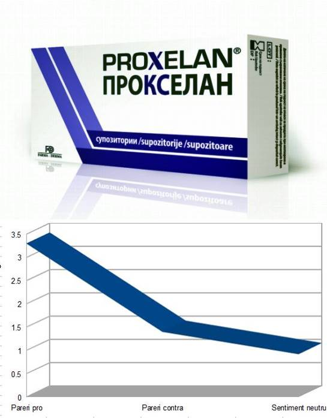
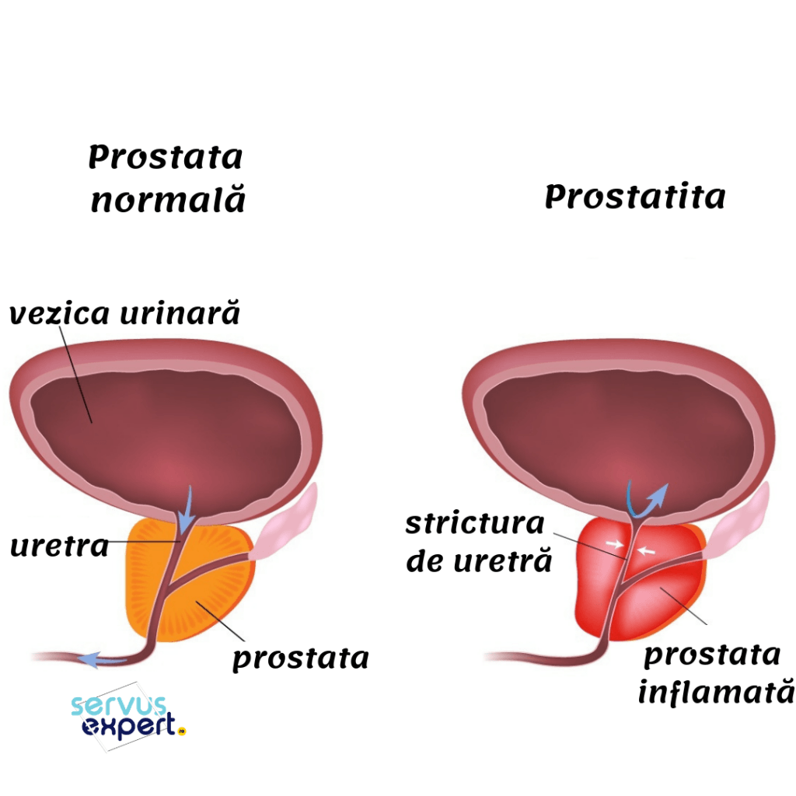
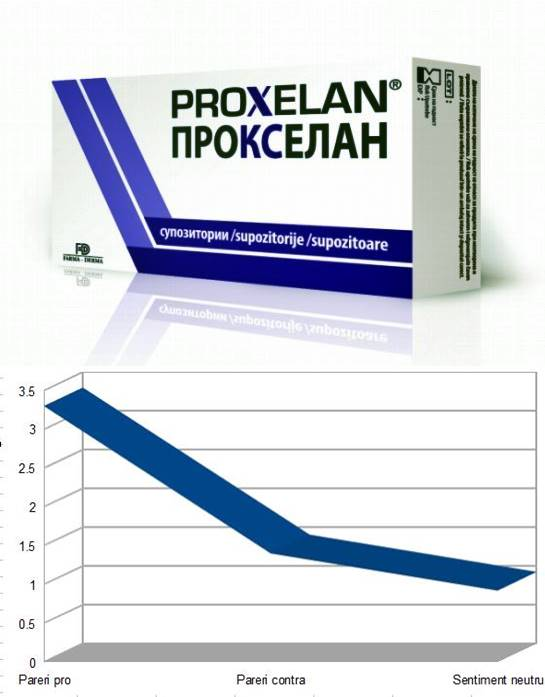

Prostatita: cauze, simptome, tratament
2020.10.01 22:57

Site-ul nostru foloseste cookie-uri pentru a-ti oferi o experienta de utilizare imbunatatita, pentru a-ti afisa continut personalizat si relevant pentru tine. Cookie-urile ne permit sa avem si statistici anonime de traffic in site, prin Google Analytics. De asemenea, unele pagini pot genera cookie-uri Google sau Facebook pentru a-ti afisa reclame cu serviciile noastre pe alte site-uri. Ai optiunea de a nu a accepta cookie-urile plasate de site. Poti sa iti exprimi aici preferintele tale legate de cookie-uri si sa citesti politica de cookie-uri a site-ului.
ACCEPT COOKIE-URISite-ul nostru nu foloseste un sistem de conturi web de utilizator. Daca doresti sa ne trimiti o solicitare legata de datele tale personale colectate prin intermediul acestui site, te rugam sa accesezi aceasta pagina:
SOLICITARI DATE PERSONALE Toggle navigation SERVICII RECUPERARE MEDICALA FIZIOTERAPIE REFLEXOTERAPIE ELECTROSTIMULAREA MAGNETICA FUNCTIONALA TERAPIA SHOCKWAVE TERAPIA DIAMAGNETICA DRENAJ LIMFATIC FIZIOTERAPIE CU ULTRASUNETE ELECTROTERAPIE ELECTROSTIMULARE FIZIOTERAPIE CU VACUUM FIZIOTERAPIE TECAR CRIOTERAPIE STRETCHING TERAPIE LASER MLS KINETOTERAPIE PRAMA RECUPERAREA DUPA TRAUMATISME RECUPERAREA DUPA OPERATIE DUPA INTERVENTIE NEUROCHIRURGICALA RECUPERARE COPII TERAPIA VOJTA DEZVOLTARE LIMBAJ BEBELUSI EVALUAREA DEZVOLTARII NEUROMOTORII EVALUARE MUSCULARA DE SUPRAFATA PRIN EMG EVALUAREA MUSCULOSCHELETALA A COPILULUI EVALUAREA POSTURII SI A MERSULUI TERAPIA SCHROTH PENTRU SCOLIOZA BABY GYM - GIMNASTICA PENTRU BEBELUSI ELECTROTERAPIE COPII KINETOTERAPIE PEDIATRICA NEUROMOTORIE KINETOTERAPIE ORTOPEDICA COPII KINETOTERAPIE OBEZITATE COPII CONSILIEREA PSIHOLIGICA COPIL-FAMILIE TERAPIA LOGOPEDICA CONSILIEREA PSIHOLIGICA INDIVIDUALA PROCEDURI SPECIALE MASAJ TERAPEUTIC KINESIO TAPING ROCKFORD TERAPIE MANUALA ERGON TERAPIA CU VENTUZE STIMULAREA ELECTRICA TRANSCRANIANA STIMULAREA ELECTRICA LA PACIENTII CU TULBURARI OBSESIV COMPULSIVE STIMULAREA DIRECTA TRANSCRANIANA PRIN CURENTI ELECTRICI STIMULAREA DIRECTA TRANSCRANIANA PENTRU REDUCEREA TINITUSULUI EFECTELE tDCS ASUPRA FUNCTIEI EXECUTIVE IN BOALA PARKINSON STIMULAREA CURENTA DIRECTA TRANSCRANIANA (tDCS) RECUPERAREA IN INCONTINENTA URINARA RECUPERARE ONCOLOGICA BANDAJAREA COMPRESIVA COMPRESIA PNEUMATICA INTERMITENTA EXERCITIUL FIZIC DRENAJUL LIMFATIC MANUAL RECUPERAREA IN OSTEOPOROZA ORTOPEDIE CONSULTATIE SI DIAGNOSTIC INFILTRATII ARTICULARE DEPARTAMENTUL DE ORTOPEDIE PEDIATRICA CONSULTATIE SI DIAGNOSTIC ORTOPEDIE PEDIATRICA ANALIZE SI INVESTIGATII AFECTIUNI SI TRATAMENTE REUMATOLOGIE NEUROLOGIE RECUPERARE NEUROLOGICA TRATAMENTUL HERNIEI DE DISC ELONGATII VERTEBRALE RECUPERAREA IN OBOSEALA CRONICA RECUPERAREA IN BOALA ALZHEIMER RECUPERAREA IN AVC RECUPERAREA IN LOMBOSCIATICA RECUPERAREA IN BOALA PARKINSON NEUROLOGIE PEDIATRICA ELECTROMIOGRAFIA ELECTROENCEFALOGRAMA NEUROCHIRURGIE IMAGISTICA RMN (Rezonanta Magnetica) ECOGRAFIE MUSCULO-SCHELETALA INFILTRATII ECOGHIDATE ECOGRAFIE DE SOLD LA NOU NASCUTI PROGRAME SPECIALE KINETOTERAPIA PRIN DANS TERAPIA PRIN MUZICA ANALIZA PLANTARA COMPUTERIZATA REFLEX PROGRAME SPECIALE PENTRU SPORTIVI PROGRAME SPECIALE PENTRU GRAVIDE METABOLIC BALANCE FIZIOKINETOTERAPIA EXPLICATA AFECTIUNI TRATATE TOTUL DESPRE RECUPERARE VEZI TOATE ARTICOLELE HERNIE DISC OPERATIE TRATAMENT DURERI SPATE OSTEOPOROZA SPONDILOZA CAUZE TRATAMENT ARTROZA CAUZE TRATAMENT GONARTROZA CAUZE TRATAMENT COXARTROZA CAUZE TRATAMENT PROTOCOALE DE RECUPERARE UMAR ARTROSCOPIA UMARULUI INTERVENTIA BANKART FRACTURA DE CLAVICULA DISJUNCTIA ACROMIO-CLAVICULARA PROCEDEUL LATARJET RECUPERAREA COAFEI ROTATORILOR UMARUL INGHETAT OPERAT COT TENORAFIA CAPULUI LUNG AL BICEPSULUI BRACHIAL LUXATIA COTULUI FRACTURA DE OLECRAN EPICONDILITA LATERALA (COTUL TENISMENULUI) EPICONDILITA MEDIALA (COTUL JUCATORULUI DE GOLF) GLEZNA SI PICIOR ENTORSA DE GLEZNA FRACTURA DE GLEZNA FRACTURA METATARSIANULUI V OPERAT TENDINITA ACHILEANA SUTURA TENDONULUI ACHILEAN OPERATIA DE HALLUX VALGUS GENUNCHI ARTROPLASTIA GENUNCHIULUI ARTROSCOPIA DE GENUNCHI DEBRIDAREA TENDONULUI GENUNCHIUL ALERGATORULUI MENISCECTOMIE MICROFRACTURI MOZAICPLASTIE OSTEOTOMIA SUPERIOARA DE TIBIE RECONSTRUCTIA LIGAMENTULUI INCRUCISAT POSTERIOR RECONSTRUCTIA MPFL REVIZIA DE LIGAMENT INCRUCISAT ANTERIOR SINDROMUL FEMURO-PATELAR SUTURA DE MENISC SUTURA TENDONULUI ROTULIAN TENDINITA ROTULIANA TEHNICI CHIRURGICALE COT SI MANA CURA CHIRURGICALA A FRACTURII DE CAP RADIAL CURA CHIRURGICALA A FRACTURII DE EPIFIZA DISTALA DE RADIUS CURA CHIRURGICALA A FRACTURII DE SCAFOID CURA CHIRURGICALA A FRACTURII DE OLECRAN CURA SINDROMULUI DE TUNEL CARPIAN CURA REINSERTIEI DISTALE A MUSCHIULUI BICEPS BRAHIAL RECONSTRUCTIA COMPLEXULUI FIBROCARTILAGINOS TRIUNGHIULAR ULNAR GENUNCHI RECONSTRUCTIA LIGAMENTULUI INCRUCISAT POSTERIOR RECONSTRUCTIA ZONEI POSTERO-EXTERNE A GENUNCHIULUI TRATAMENTUL LEZIUNILOR DE CARTILAJ ARTICULAR TRATAMENTUL LEZIUNILOR MENISCALE ARTROPLASTIA DE GENUNCHI OSTEOTOMIILE LA NIVELUL GENUNCHIULUI RECONSTRUCTIA LIGAMENTULUI COLATERAL MEDIAL RECONSTRUCTIA LIGAMENTULUI FEMURO-PATELAR MEDIAL RECONSTRUCTIA LIGAMENTULUI INCRUCISAT ANTERIOR GLEZNA SI PICIOR CURA INSTABILITATII TENDOANELOR PERONIERE TEHNICA CORECTIEI PICIORULUI PLAT VALG CU HYPROCURE OSTEOTOMIILE DE CALCANEU IN PICIORUL PLAT VALG TEHNICILE CHIRURGICALE IN LEZIUNILE LISFRANC CURA CHIRURGICALA A FRACTURII JONES CURA CHIRURGICALA A MONTURILOR (HALLUX VALGUS) ARTRODEZA ARTROSCOPICA DE GLEZNA ARTRODEZA SUBTALARA DE GLEZNA CURA NEURINOMULUI MORTON CURA CHIRURGICALA PENTRU HALLUX RIGIDUS CURA CHIRURGICALA PENTRU DEGET IN CIOCAN CURA CHIRURGICALA PENTRU TAYLOR BUNION RECONSTRUCTIA CARTILAJULUI ARTICULAR TALAR TEHNICA OATS PENTRU DEFECTELE OSTEOCARTILAGINOASE ALE GLEZNEI TEHNICI DE SUTURA ALE TENDONULUI ACHILEAN RECONSTRUCTIA LIGAMENTELOR LATERALE ALE GLEZNEI TEHNICA BOSTROM PENTRU RECONSTRUCTIA LIGAMENTULUI TALO-FIBULAR ANTERIOR RECONSTRUCTIA LIGAMENTULUI DELTOID SOLD ARTROPLASTIA DE SOLD UMAR CURA ARTROZEI ACROMIO-CLAVICULARE CURA DECOMPRESIEI SUBACROMIALE CURA DISJUNCTIEI ACROMIO-CLAVICULARE CURA REINSERTIEI PROXIMALE A MUSCHIULUI BICEPS BRAHIAL REINSERTIA COAFEI MUSCHILOR ROTATORI TEHNICA BANKART PENTRU LUXATIA UMARULUI TEHNICA LATARJET PENTRU LUXATIA UMARULUI CURA CHIRURGICALA A FRACTURII DE CLAVICULA DIN TREIMEA EXTERNA CURA CHIRURGICALA A FRACTURII DIN PARTEA SUPERIOARA A HUMERUSULUI DESPRE NOI CLINICA MASURI ANTI-COVID19 TUR VIRTUAL METODA UNICA DE RECUPERARE AMPLASARE IMAGINI DIN CLINICA DEPARTAMENTE SPECIALE DEPARTAMENTUL DE NEUROLOGIE DEPARTAMENTUL DE RECUPERARE PEDIATRICA DEPARTAMENTUL DE KINETOTERAPIE DEPARTAMENTUL DE FIZIOTERAPIE DEPARTAMENTUL DE ORTOPEDIE CHESTII INTERESANTE RECUPERARI DE SUCCES STUDIU DE CAZ: RAZVAN GAVRILA STUDIU DE CAZ: CAMIL MOLDOVEANU STUDIU DE CAZ: IONUT PASCU PARTENERI NOUTATILE CLINICII ARTICOLE DESPRE CENTROKINETIC ECHIPA CENTROKINETIC MEDICI NEUROCHIRURGI MEDICI ORTOPEDIE SI TRAUMATOLOGIE MEDICI NEUROLOGI MEDICI REUMATOLOGI MEDICI NUTRITIONISTI MEDICI DE RECUPERARE MEDICI RADIOLOGI PSIHOLOGI LOGOPEZI FIZIOTERAPEUTI KINETOTERAPEUTI APARATURA SI TEHNOLOGII PENTRU KINETOTERAPIE PLACA DE VIBRATII GALILEO BODYTONE QUICKBOARD VERTIMAX PENTRU FIZIOTERAPIE APARATUL DE ELECTROSTIMULARE MAGNETICA SCAUNUL REMED POMPA DIAMAGNETICA PERISO ECHIPAMENTUL STORZ DUOLITH GAME READY TECAR WINBACK ZIMMER TRITON CHATTANOOGA APARATUL LASER MLS APARATUL K-LASER PENTRU INVESTIGATII APARATUL GPS 400 RMN ESAOTE E-SCAN ELECTROMIOGRAF NIHON ECOGRAF SAMSUNG ELECTROENCEFALOGRAFUL NEURON SPECTRUM 5 CARIERE TARIFE PROGRAMARI SI CONTACT PARTENERIATE GRADINITE CLUBURI COMPANII PROGRAMEAZA-TE
LA O CONSULTATIE
Vezi aici modalitatile de programare si localizarea clinicii
PROGRAMARE
Prostatita: cauze, simptome, tratament
HOME FIZIOKINETOTERAPIA EXPLICATA TOTUL DESPRE RECUPERARE PROSTATITA: CAUZE, SIMPTOME, TRATAMENT SIMONA FATULESCU, Medic primar recuperareInformatii generale despre prostatita Tipuri de prostatita Cauze Factori de risc Simptome Complicatii Diagnostic Tratament Remedii naturiste Preventie Acest articol a fost scris de catre dna dr. Fatulescu Simona , medic primar recuperare, cu peste 15 ani de experienta in tratamentul afectiunilor osteoarticulare.
Informatii generale despre prostatita
Ce este prostatita? Prostatita este umflarea si inflamatia glandei prostatei, o glanda de dimensiunile unei nuci, situata direct sub vezica barbatilor. Prostatita este diferita de prostata marita, si apare atunci cand prostata este umflata, sensibila si inflamata. Glanda prostata produce lichidul care transporta spermatozoizii. Prostatita provoaca adesea urinare dureroasa sau dificila. Alte simptome includ dureri inghinale, in zona pelvina sau organele genitale, si uneori simptome asemanatoare gripei.
Prostatita afecteaza barbatii de toate varstele, dar tinde sa fie mai frecventa la barbatii de 50 de ani sau mai tineri. Afectiunea are o serie de cauze. Uneori, cauza nu este identificata. Daca prostatita este cauzata de o infectie bacteriana, poate fi tratata de obicei cu antibiotice.
In functie de cauza, prostatita poate aparea treptat sau brusc. S-ar putea imbunatati rapid, fie cu tratament, fie fara. Unele tipuri de prostatita dureaza luni intregi sau continua sa reapara (prostatita cronica).
Tipuri de prostatita
Unele tipuri de prostatita sunt cauzate de o infectie bacteriana. Aceste cazuri sunt adesea insotite de simptomele clasice ale infectiei, precum febra, frisoane si dureri musculare, impreuna cu probleme urinare. Drept urmare, acestea sunt relativ usor de diagnosticat si tratat si, de obicei, raspund bine la antibiotice. Din pacate, astfel de forme simple de prostatita sunt minoritare.
Medicii nu sunt siguri ce anume provoaca celelalte tipuri de prostatita. Potentialii vinovati includ bacteriile greu de detectat, inflamatia, depresia si stresul, si probleme mecanice sau neuromusculare la nivelul muschilor pelvieni care irita zona. Oamenii de stiinta au identificat patru tipuri de prostatita:
prostatita cronica sau sindrom de durere cronica pelvina prostatita bacteriana acuta prostatita cronica bacteriana prostatita inflamatorie asimptomaticaProstatita acuta bacteriana
Aceasta infectie cu debut brusc este cauzata de bacteriile care calatoresc din uretra si din rect, pana la prostata. Este cea mai putin comuna, dar cea mai dramatica forma de prostatita, care incepe brusc cu febra ridicata, frisoane, dureri articulare, musculare si oboseala profunda. In plus, este posibil sa aveti dureri in jurul bazei penisului si in spatele scrotului, si dureri in partea inferioara a spatelui. Pe masura ce prostata devine mai umflata, este mai dificil sa urinati, iar fluxul de urina poate deveni slab. Daca nu puteti urina deloc, este o urgenta medicala; de obicei, aceasta inseamna ca prostata este atat de umflata incat blocheaza complet fluxul de urina. In functie de gravitatea simptomelor, poate fi necesara spitalizarea. Antibioticele sunt tratamentul standard si sunt extrem de eficiente pentru aceasta forma de prostatita. Este important sa va continuati medicatia pe toata durata prescrisa, chiar daca va simtiti mai bine. Acest lucru va ajuta la prevenirea revenirii infectiei. Consumul multor lichide poate ajuta la eliminarea bacteriilor din sistemul dumneavoastra.
Prostatita cronica bacteriana
Si acest tip de prostatita este cauzat de bacterii. Spre deosebire de forma acuta, prostatita bacteriana cronica este o infectie subtila, care poate persista cateva saptamani sau chiar luni. Un barbat cu prostatita bacteriana cronica nu are, de obicei, febra, dar este tulburat de simptome intermitente, cum ar fi nevoia brusca de a urina, urinarea frecventa, urinarea dureroasa sau nevoia de a se ridica noaptea pentru a urina. Unii barbati au dureri de spate in zona inferioara, dureri in rect sau o senzatie de greutate in spatele scrotului. Tratamentul necesita aceleasi antibiotice utilizate pentru forma acuta, de obicei timp de una pana la trei luni, dar chiar si cu tratamentul prelungit, infectia reapare adesea. Daca se intampla acest lucru, recurenta poate fi de obicei controlata cu un alt curs de antibiotice.
Prostatita cronica/sindromul durerii cronice pelvine
Prostita cronica cunoscuta si sub denumirea de sindromul durerii cronice pelvine, este cea mai frecventa forma de prostatita. Simptomele sale seamana cu cele ale prostatitei cronice bacteriene. Cu toate acestea, nu exista bacterii evidente si identificarea unei cauze sau a cauzelor este dificila.
Cercetarile sugereaza ca prostatita cronica poate rezulta dintr-o cascada de evenimente interconectate. Evenimentul initiator poate fi stresul, un agent infectios nedetectabil sau un traumatism fizic care provoaca inflamatii sau leziuni nervoase in zona genito-urinara. In timp, acest lucru poate duce la cresterea sensibilitatii sistemului nervos. Cu alte cuvinte, prostatita cronica poate fi un sindrom de durere hiperactiva. Mai mult, unii medici si cercetatori incep sa creada ca afectiunea poate afecta intregul planseu pelvin - toti muschii implicati, vezica si functia sexuala - nu doar glanda prostatica.
Deoarece barbatii sufera adesea de simptome multiple simultan - cum ar fi durerea si dificultatile de urinare - pot necesita mai multe tipuri de medicamente sau alte terapii, in functie de simptome. Acestea includ antibiotice, calmante, un medicament pentru a reduce nevoia de a urina, un medicament pentru a usura fluxul de urina prin relaxarea muschilor de la gatul vezicii urinare si chiar unele terapii alternative, cum ar fi eliberarea miofasciala.
Prostatita inflamatorie asimptomatica
Prostatita inflamatorie asimptomatica este descoperita de obicei in timpul testelor pentru o alta afectiune medicala, cum ar fi infertilitatea sau alte afectiuni ale prostatei. Celulele albe din sange sunt prezente in urina sau secretii de prostata, dar nu exista simptome. Fara simptome si fara o cauza cunoscuta, afectiunea nu este tratata.
Cauze
Prostatita poate fi cauzata de bacterii care ajung in glanda prostatei, din tractul urinar (cea mai frecventa cauza bacteriana) sau din rect. De asemenea, poate rezulta din diferite organisme cu transmitere sexuala, cum ar fi Neisseria gonorrhoeae, Chlamydia trachomatis sau HIV. Alte organisme responsabile de infectie sunt aceleasi gasite cel mai frecvent in infectiile tractului urinar, cum ar fi Escherichia coli. In multe cazuri (in special in forma cronica a prostatitei), nu se poate gasi o cauza specifica a prostatitei. Cauzele prostatitei difera in functie de tip.
Prostatita cronica sau sindromul durerii cronice pelvine. Nu se cunoaste cauza exacta a sindromului durerii cronice pelvine. Cercetatorii cred ca un microorganism, deci nu o infectie bacteriana, poate cauza afectiunea. Acest tip de prostatita poate avea legatura cu substantele chimice din urina, raspunsul sistemului imunitar la o infectie a tractului urinar anterior, sau afectarea nervilor in zona pelvina.
Prostatita bacteriana acuta si cronica. O infectie bacteriana a prostatei provoaca prostatita bacteriana. Tipul acut poate aparea brusc si dureaza un timp scurt, in timp ce tipul cronic se dezvolta lent si dureaza mult timp, de multe ori se poate intinde pe mai multi ani. Infectia poate aparea atunci cand bacteriile calatoresc din uretra, in prostata.
Factori de risc
Barbatii de toate varstele pot fi afectati de prostatita, dar este mai frecventa la barbatii tineri si de varsta mijlocie. Alti factori de risc pentru dezvoltarea prostatitei sunt urmatorii:
Un istoric anterior de prostatita Avand o infectie a tractului urinar recent Utilizarea recenta a unui cateter urinar sau a unei proceduri urologice recente Glanda prostata marita Implicarea in contact rectal Avand o anomalie a tractului urinar structural sau functional Deshidratare (nu sunt suficiente lichide) Traumatism pelvin local sau vatamare, cum ar fi mersul pe bicicleta sau echitatiaVarsta
Spre deosebire de alte afectiuni ale prostatei, cum ar fi marirea prostatei sau cancerul de prostata, care afecteaza de obicei barbatii in varsta, prostatita se poate dezvolta la barbati de toate varstele, dar afecteaza frecvent barbatii cu varste cuprinse intre 30 si 50 de ani.
Infectie la nivelul vezicii urinare
Avand o infectie in vezica sau in tubul care transporta materialul seminal si urina (uretra), poate duce la prostatita. Multi barbati cu infectii urinare din cauza unei prostate marite necesita o interventie chirurgicala pentru a indeparta o parte a glandei. Deoarece aceasta interventie chirurgicala poate imbunatati fluxul de urina, poate ajuta la prevenirea infectiilor.
Traumatisme in zona pelviana
Traumatismele in zona pelviana, care pot aparea in urma mersului pe bicicleta, a ridicarii de greutati sau echitatie, pot duce la prostatita. Barbatii cu leziuni nervoase la nivelul tractului urinar inferior cauzate de o interventie chirurgicala sau de un traumatism, pot avea mai multe sanse sa dezvolte prostatita cronica / sindrom de durere cronica pelvina. Stresul psihologic poate creste, de asemenea, sansele unui om de a dezvolta aceasta afectiune.
Infectia cu HIV
Bolile cu transmitere sexuala si HIV sunt doua dintre cauzele cunoscute ale prostatitei bacteriene. De obicei, barbatii cu varsta sub 35 de ani sunt cei care dezvolta fie prostatita bacteriana acuta, fie prostatita cronica bacteriana, asociata cu boala cu transmitere sexuala (BTS) si HIV. Chiar daca bolile cu transmitere sexuala sunt asociate cu cauze de prostatita bacteriana, BTS si HIV pot duce, de asemenea, la prostatita cronica / sindrom de durere cronica pelvina, prin crearea inflamatiei in prostata. Obiceiurile sexuale ale unui barbat, precum si bacteriile si virusurile (inclusiv HIV) ar putea juca un rol initial in prostatita cronica. Pe langa HIV, alte tipuri de afectiuni autoimune sunt cauze cunoscute ale prostatitei cronice.
Biopsia la nivelul prostatei
Prostatita poate aparea dupa procedurile de manipulare transuretrala, cum ar fi cateterismul uretral si cistoscopia, sau dupa o biopsie la nivelul prostatei. Dupa efectuarea biopsiei, pacientul este expus riscului de a dezvolta prostatita.
Simptome
Fiecare tip de prostatita prezinta o serie de simptome care variaza in functie de cauza, si pot fi diferite pentru fiecare pacient in parte. Multe simptome sunt similare cu cele ale altor afectiuni.
Prostatita cronica / sindrom de durere cronica pelvina. Principalele simptome ale acestui tip de prostatita pot include dureri sau disconfort care dureaza 3 sau mai multe luni, in una sau mai multe dintre urmatoarele zone:
intre scrot si anus abdomenul inferior central penis scrot partea inferioara a spateluiDurerea in timpul sau dupa ejaculare este un alt simptom comun. Un barbat cu prostatita cronica / sindrom de durere cronica pelvina, poate avea dureri raspandite in jurul zonei pelvine, sau poate avea dureri in una sau mai multe zone in acelasi timp. Durerea poate sa dispara si sa revina, si sa apara brusc sau treptat. Alte simptome pot include:
durere in uretra in timpul sau dupa urinare. dureri la nivelul penisului in timpul sau dupa urinare. urinare frecventa - urinare de opt ori mai multe ori pe zi. Vezica incepe sa se contracte chiar si atunci cand contine cantitati mici de urina, provocand o urinare mai frecventa. urgenta urinara - incapacitatea de a intarzia urinarea. un flux de urina slab sau intrerupt.Prostatita bacteriana acuta. Simptomele prostatitei bacteriene acute apar brusc si sunt severe. Barbatii ar trebui sa solicite ingrijiri medicale imediate. Simptomele prostatitei bacteriene acute pot include:
urinare frecventa urgenta urinara febra frisoane senzatie de arsura sau durere in timpul urinarii dureri in zona genitala, inghinal, abdomenul inferior sau partea inferioara a spatelui urinare frecventa in perioadele de somn greata si varsaturi dureri de corp retentie urinara - incapacitatea de a goli vezica complet probleme la pornirea unui flux de urina un flux de urina slab sau intrerupt blocaj urinar - incapacitatea completa de a urinaProstatita cronica bacteriana. Simptomele prostatitei cronice bacteriene sunt similare cu cele ale prostatitei bacteriene acute, desi nu sunt la fel de severe. Acest tip de prostatita se dezvolta adesea lent si poate dura 3 sau mai multe luni. Simptomele pot sa dispara si sa revina sau pot fi usoare tot timpul. Prostatita cronica bacteriana poate aparea dupa tratamentul anterior al prostatitei bacteriene acute sau al unei infectii a tractului urinar. Simptomele prostatitei bacteriene cronice pot include:
urinare frecventa urgenta urinara senzatie de arsura sau durere in timpul urinarii dureri in zona genitala, inghinal, abdomenul inferior sau partea inferioara a spatelui ejaculare dureroasa retentie urinara probleme la pornirea unui flux de urina un flux de urina slab sau intrerupt blocaj urinarComplicatii
De obicei, prostatita acuta dispare dupa un curs de antibiotice. Este important sa urmati tratamentul complet, pentru a va asigura ca infectia dispare. Rar, pot aparea si alte complicatii ale prostatitei acute.
Retentie urinara acuta - Deoarece eliminarea urinei poate fi un proces foarte dureros, urina se poate acumula in vezica urinara, provocand dureri in abdomen. Pentru a usura acest lucru, este nevoie de un cateter.
Abcesul prostatei - Daca antibioticele nu sunt eficiente in tratarea infectiei prostatei, rareori se poate dezvolta un abces in glanda prostatei. Medicul dumneavoastra poate suspecta acest lucru daca simptomele dumneavoastra nu se imbunatatesc, in ciuda tratamentului cu antibiotice. Pentru a confirma acest lucru, vor fi necesare teste suplimentare, cum ar fi o scanare cu ultrasunete sau o tomografie a glandei prostatei. Daca este prezent un abces, veti avea nevoie de o operatie pentru a-l elimina.
Infectia in sange (bacterimie) si epididimita (inflamatia epididimului), pot fi consecinte ale unei prostatite netratate, sau tratate necorespunzator.
Alte complicatii includ infertilitate, disfunctie sexuala si inflamatia organelor reproductive din apropierea prostatei.
Diagnostic
Exista o serie de teste care pot fi utilizate pentru a afla daca aveti prostatita. Poate dura ceva timp pentru a obtine un diagnostic - simptomele prostatitei pot fi asemanatoare cu alte probleme precum infectiile urinare, ceea ce poate ingreuna diagnosticul.
Prostatita este de obicei diagnosticata analizand o proba de urina, si prin examinarea glandei prostatei de catre medicul specialist. Aceasta examinare implica o examinare rectala pentru a palpa glanda prostatica, si pentru a simti anomalii ale glandei. Ocazional, medicul poate colecta si testa un esantion de lichid prostatic.
Uneori se efectueaza un masaj al prostatei pentru a compara probe de lichid prostatic. Pentru a efectua aceasta procedura, medicul maseaza cu degetul glanda prostatica in timpul examinarii rectale. Deoarece exista ingrijorarea ca aceasta procedura poate elibera bacteriile in fluxul sanguin, acest test este contraindicat in cazurile de prostatita bacteriana acuta.
Analize de urina
Este posibil ca medicul dumneavoastra sa analizeze o mostra de urina pentru a cauta semne de infectie in urina (analiza urinara). Urologul dumneavoastra poate comanda, de asemenea, teste de flux de urina sau urodinamica. Acestea ajuta la masurarea puterii fluxului de urina. Aceste teste detecteaza, de asemenea, orice blocaj cauzat de prostata, uretra sau muschii pelvieni.
Analize de sange
Este posibil ca medicul dumneavoastra sa examineze probe de sange pentru identificarea unor semne de infectie, si alte probleme de prostata. Sangele si sperma dumneavoastra pot fi, de asemenea, testate pentru bacterii si globule albe.
Tuseul rectal
In unele cazuri, medicul trebuie sa maseze prostata si sa testeze secretiile. Examinarea fizica a prostatei se face prin tuseu rectal, metoda care ii ofera medicului posibilitatea de a simti ceva neobisnuit, si de a verifica dimensiunea prostatei.
Teste imagistice
In unele cazuri, medicul dumneavoastra poate cere o scanare CT a tractului urinar si a prostatei, sau o sonograma a prostatei. Scanarea CT ofera informatii mai detaliate decat radiografia simpla. O sonograma este imaginea vizuala produsa de o ecografie.
Tratament
Tratamentele pentru prostatita depind de cauza de baza. Acestea pot include:
Antibiotice. Acesta este tratamentul prescris cel mai frecvent pentru prostatita. Medicul dumneavoastra va alege medicatia in functie de tipul de bacterii care ar putea sa va provoace infectia. Daca aveti simptome severe, este posibil sa aveti nevoie de antibiotice intravenoase. Probabil va trebui sa luati antibiotice orale timp de patru pana la sase saptamani, dar este posibil sa aveti nevoie de un tratament mai lung pentru prostatita cronica sau recurenta. Alfa-blocante. Aceste medicamente ajuta la relaxarea gatului vezicii urinare si a fibrelor musculare unde prostata se alatura vezicii urinare. Acest tratament poate usura simptomele, cum ar fi urinarea dureroasa. Agenti antiinflamatori. Medicamentele antiinflamatoare nesteroidiene pot ameliora simptomele.Prostita cronica / sindrom de durere cronica pelvina. Tratamentul pentru prostatita cronica are ca scop diminuarea durerii, disconfortului si inflamatiei. Exista o gama larga de simptome si nu exista un singur tratament pentru fiecare barbat. Desi antibioticele nu vor ajuta la tratarea prostatitei non-bacteriene, un urolog le poate prescrie, cel putin initial, pana cand exclude o infectie bacteriana. Un urolog poate prescrie alte medicamente:
antiinflamatoare nesteroidiene sulfat de condroitina relaxante musculare neuromodulatoareCentrokinetic va poate oferi o serie de tratamente:
bai calde terapie termica locala cu ajutorul tehnicii Winback terapie fizica, cum ar fi: exercitii Kegel - strangerea si relaxarea muschilor care tin urina in vezica si mentin vezica in pozitia corecta, numite si exercitii musculare pelvine. eliberare miofasciala - presare si intindere, uneori cu racire si incalzire, a muschilor si tesuturilor moi din partea inferioara a spatelui, a regiunii pelvine si a picioarelor. exercitii de relaxareProstatita bacteriana acuta. Un urolog trateaza prostatita bacteriana acuta cu antibiotice. Antibioticul prescris poate depinde de tipul de bacterii care provoaca infectia. Urologii prescriu de obicei antibiotice orale timp de cel putin 2 saptamani. Infectia poate reveni, de aceea, unii urologi recomanda administrarea de antibiotice orale timp de 6 pana la 8 saptamani. Cazurile severe de prostatita acuta pot necesita o scurta spitalizare, astfel incat pacientii sa primeasca lichide si antibiotice printr-un tub intravenos. Dupa tratamentul intravenos, pacientul va trebui sa ia antibiotice orale timp de 2 pana la 4 saptamani. Majoritatea cazurilor de prostatita bacteriana acuta se trateaza cu succes cu medicamente si usoare modificari ale dietei. Medicul urolog poate recomanda:
evitarea sau reducerea aportului de substante care irita vezica, cum ar fi alcoolul, bauturile cofeinizate si alimentele acide si picante cresterea aportului de lichide pentru a urina des si pentru a ajuta la eliminarea bacteriilor din vezicaProstatita cronica bacteriana. Un urolog trateaza prostatita bacteriana cronica cu antibiotice. Cu toate acestea, tratamentul necesita un curs mai lung de terapie. Urologul poate prescrie o doza mica de antibiotice timp de pana la 6 luni pentru a preveni infectia recurenta. De asemenea, urologul poate prescrie un antibiotic diferit sau poate utiliza o combinatie de antibiotice daca infectia continua sa reapara. Medicul poate recomanda cresterea aportului de lichide, si evitarea sau reducerea aportului de substante care irita vezica.
Medicul urolog poate recomanda alfa-blocante pentru a trata retentia urinara cauzata de prostatita bacteriana cronica. Aceste medicamente ajuta la relaxarea muschilor vezicii urinare in apropierea prostatei si diminueaza simptomele, cum ar fi urinarea dureroasa. Barbatii pot necesita o interventie chirurgicala pentru a trata retentia urinara cauzata de prostatita bacteriana cronica. Indepartarea chirurgicala a tesutului cicatricial din uretra, imbunatateste adesea fluxul de urina si reduce retentia urinara.
Remedii naturiste
In timpul tratamentului prostatitei bacteriene, urologii pot recomanda cresterea aportului de lichide si evitarea sau reducerea aportului de substante care irita vezica. Pe langa tratamentul medical, remediile naturiste pentru prostatita includ:
Baile calde Evitarea alcoolului, cofeinei si mancarurilor picante. Masajul prostatei: in cateva studii, s-a demonstrat ca masajul prostatei scade simptomele la unii pacienti cu prostatita cronica. Modificari ale stilului de viata: daca mergeti cu bicicleta sau calariti, se recomanda suspendarea acestei activitati. Desi exista multe preparate pe baza de plante disponibile, nu exista dovezi actuale ca remediile din plante sunt cu siguranta de ajutor in cazul prostatitei. Acupunctura a aratat o scadere a simptomelor la unele persoane care sufera de prostatita.Urzica
Ceaiurile din radacina de urzica se pot folosi la ameliorarea simptomelor prostatitei. Studiile au demonstrat ca extractele de urzica ajuta la tratarea problemelor de urinare pe termen scurt si lung, fara efecte secundare.
Rosii
Rosiile contin un puternic antioxidant numit licopen. Licopenul poate ajuta la prevenirea cancerului de prostata, precum si la reducerea cresterii tumorii in randul barbatilor cu cancer de prostata. Cercetatorii au descoperit ca barbatii care au mancat mai multe rosii si produse pe baza de rosii, atat crude cat si gatite, au fost mai putin susceptibili sa dezvolte cancer de prostata. Totusi, sunt necesare mai multe cercetari pentru a confirma un beneficiu. Alte fitochimicale din rosii pot actiona in sinergie cu licopenul pentru a potenta efectele de protectie si pentru a ajuta la mentinerea sanatatii prostatei.
Patlagina
Patlagina este o planta foarte importanta deoarece contine zinc, care ajuta la echilibrarea hormonului masculin. Zincul functioneaza ca antiinflamator si impiedica marirea prostatei.
Ulei de oregano salbatic
Uleiul esential de oregano salbatic este foarte apreciat pentru proprietatile sale antiseptice. Inhiba bacteriile E. coli, Proteus si Pseudomonas, ceea ce il face un remediu foarte eficient atat pentru infectiile tractului urinar, cat si pentru prostatita.
Patrunjel
Sucul din frunze de patrunjel ajuta la combaterea bolilor aparatului urogenital, precum si la intarirea sistemului imunitar. Patrunjelul, ca planta naturala, poate avea beneficii puternice asupra sanatatii tractului urinar. Proprietatile sale diuretice sunt excelente. Flavonoidele si alti compusi naturali din patrunjel pot elimina inflamatia prostatei si ajuta la curatarea toxinelor din organism. Trebuie evitata utilizarea excesiva a patrunjelului, deoarece poate provoca leziuni renale si hepatice.
Varza
Varza are efect antiinflamator puternic, astfel ajuta la reducerea dimensiunii prostatei. De asemenea, varza contine substante care lupta impotriva celulelor canceroase.
Propolis
Tratarea prostatitei cronice este considerata o provocare majora si lipsesc in mod constant tratamente medicamentoase eficiente. Acest lucru face ca pacientii sa recurga la metode naturiste. Mai multe studii efectuate pe oameni au aratat ca pacientii cu prostatita raspund pozitiv la tratamentul cu propolis. Propolisul este folosit pentru tratarea mai multor boli ale prostatei, inclusiv a adenomului de prostata.
Preventie
Barbatii nu pot preveni prostatita. In prezent, cercetatorii incearca sa inteleaga mai bine care sunt cauzele prostatitei si sa dezvolte strategii de prevenire. Insa, exista cateva masuri care diminueaza sansele de aparitie a prostatitei:
evitarea sexului neprotejat poate ajuta la prevenirea prostatitei bacteriene acute - anumite boli cu transmitere sexuala, cum ar fi gonoreea, pot provoca prostatita bacteriana. Practicarea sexului sigur, folosind prezervativul, ajuta la reducerea riscului de prostatita. igiena buna exercitii hidratare - o hidratare corespunzatoare dilueaza urina. Deshidratarea si infectiile tractului urinar sunt factori de risc pentru prostatita si pot agrava simptomele. consumati mai multe fructe si legume - fructele si legumele contin niveluri ridicate de antioxidanti, vitamine si alte substante nutritive care vor ajuta la combaterea infectiilor si inflamatiilor. reduceti aportul de cafeina mentineti o greutate sanatoasa - excesul de greutate este daunator pentru sanatatea generala a prostatei. Faceti eforturi pentru a scapa de kilogramele in plus.Poti face aici programare pentru consultatie, pentru RMN sau pentru recuperare medicala. LaCentrokinetic, cei mai buni medici si terapeuti iti stau la dispozitie pentruorice problema articulara sau musculo-scheletala, de la consultatia initiala siinvestigatii complete in cadrul clinicii, pana la tratament si recuperaremedicala completa in afectiuni de coloana, traumatice sau post chirurgicale.
Afla noutati despre noi urmarind conturile de Facebook si YouTube ale clinicii Centrokinetic.
RECUPERARI DE SUCCES
IONUT ATODIRESEI
Vezi detalii
CITESTE MAI MULTCAMIL MOLDOVEANU
Vezi detalii
CITESTE MAI MULTIONUT PASCU
Vezi detalii
CITESTE MAI MULTPROGRAMEAZA-TE PENTRU O CONSULTATIE
Pentru ca orice tratament in clinica noastra este bazat pe un diagnostic si se face sub urmarire medicala, pentru evaluarea permanenta a evolutiei. INFO: Clinica Centrokinetic nu colaboreaza cu Casa Nationala de Asigurari de SanatatePROGRAMEAZA-TE
PROGRAMEAZA-TE
LA O CONSULTATIE
Vezi aici modalitatile de programare si localizarea clinicii
PROGRAMARE
CELE MAI NOI ARTICOLE
Rezultatele terapiei diamagnetice in sindrom de edem osos Reflexoterapie Tratamentul prin reducere si osteosinteza cu placa blocata pentru luxatia traumatica a articulatiei sternoclaviculare ECHIPA
MEDICALA
Dr. BOGDAN IOAN ANDREI Ortopedie Dr. CATALIN GICAN Ortopedie Dr. GEORGIANA TACHE Medic primar recuperare Dr. SORIN-LUCIAN GHIEA Imagistica Dr. EDIS MUSTAFA Reabilitare medicala
Ortopedie
Dr. COSMIN PANTU Imagistica Dr. ORLANDO MARINESCU Ortopedie pediatrica Dr. BOGDAN ROTARU Neurolog Dr. SIMONA FATULESCU Recuperare medicala Dr. DACIANA ISPIR Health Coach Dr. COSMIN BACIU Ortopedie Dr. LUCIAN STANCIU Ortopedie Dr. ALEXANDRU CRINTEAOrtopedie
Dr. ALIZZI KHALID Reumatologie
Neurologie
Dr.CATALIN NAHOI Ortopedie pediatrica
Neurologie pediatrica
Nutritie, diabet zaharat, boli metabolice
CELE MAI CITITE ARTICOLE
PICIOARE UMFLATE HERNIA DE DISC: TOT CE TREBUIE SA STII DUREREA DE UMAR TOT CE TREBUIE SA STII DESPRE SCOLIOZA LA ADULTI SI COPII DUREREA DE SPATE ARTROZA - CE ESTE, CAUZE, TRATAMENT SI SIMPTOME GONARTROZA - CE ESTE, CUM SE MANIFESTA SI CUM O TRATAM COXARTROZA: CAUZE, SIMPTOME SI METODE DE TRATAMENT RUPTURA DE MENISC TOTUL DESPRE POLIARTRITA REUMATOIDACONTACT
Orarul de functionare:Luni – Vineri , intre orele 07.00 – 21.00
Sambata , intre 09.00 – 14.00
Duminica ne relaxam. Adresa clinicii:
Bucuresti, Sector 2
Bd. Mircea Eliade, nr. 18.
Eliade Tower, intrarea A, Etaj 3 Telefon: 0755055216 PROGRAMEAZA-TE LA O CONSULTATIE
LOCALIZARE PE HARTA
Centrokinetic este un centru de recuperare medicala care urmareste sa obtina rezultatul optim pentru fiecare pacient in parte. Medicii si terapeutii nostri ofera servicii complete de diagnosticare si tratament in afectiunile neuro-ortopedice, inclusiv proceduri de kinetoterapie, fizioterapie, hidroterapie. Afla cum te putem ajuta explorand site-ul si fa-ti o programare la consultatie la clinica din Bucuresti, sediul Eliade Tower, sectorul 2.
TERMENI SI CONDITII | POLITICA DE CONFIDENTIALITATE | POLITICA DE COOKIES |Copyright 2017 Centrokinetic
Programeaza-te aici- Prostatita - tratament naturist - SanatateCuPlante
- Prostatita: Generalitati, Factori de risc si Tratament
- PROSTATA - Perne pentru hemoroizi, afectiuni anale, dureri ...
- Prostata: cele mai comune boli ale acesteia si ...
- Prostatita acută - cauze, simptome, diagnostic şi ...
- Prostatia cronica - Actinmed
- Adevărul despre Prostero – preț, păreri, forum, prospect ...
- Prostatita | Prostenal
- Prostatita - medicover.ro
- PROSTATITELE - rasfoiesc.com
- Prostatita - tratament naturist - SanatateCuPlante
Prostatita acuta este o infectie a prostatei si poate reprezenta o problema grava de sanatate in randul barbatilor. Prostata este un organ vecin vezicii urnare, o glanda a aparatului urogenital masculin. Mai exact, este zona de intersectie intre calea genitala si cea urinara. Rolul prostatei este de a produce o parte din lichidul seminal si de a activa spermatozoizii prin alcalinizarea ...
- Prostatita: Generalitati, Factori de risc si Tratament
Prostatita subacuta..Intrebare :) » Secțiunea: Forum medical...la un control la medic si mi-a gasit o prostatita subacuta. Mi-a prescris asa :Augmentin 1/12 ore, Flamexin 2 plicuri /zi dupa mese si Tinizol 4 pastile azi si ...ore alte 4.
- PROSTATA - Perne pentru hemoroizi, afectiuni anale, dureri ...
Prostatita - Mecanism fiziopatologic. Prostatita, in special cea care are perioade lungi simptomatice, poate cauza stress, anxietate sau depresie. Barbatii cu prostatita acuta bacteriana au durere de intensitate crescuta si pot necesita spitalizare. Majoritatea se vindeca in urma terapiei cu antibiotice.
- Prostata: cele mai comune boli ale acesteia si ...
Prostatita consta in inflamarea prostatei, adica a glandei situata exact sub vezica urinara a barbatului. Glanda prostata are rolul de a produce lichidul care transporta spermatozoizii. Prostatita cauzeaza adesea disconfort si durere la urinare. Aceasta afectiune poate aparea la orice varsta, insa ...
- Prostatita acută - cauze, simptome, diagnostic şi ...
Prostatita (inflamație sau o infecție a prostatei) este o boală complexă, ce poate avea multe modalități de manifestare. Spre deosebire de majoritatea problemelor legate de prostată, prostatita apare mai frecvent la bărbații tineri și de vârsta a doua.
- Prostatia cronica - Actinmed
Prostatita acuta bacteriana este tratata cu antibiotice, medicamente pentru febra (antipiretice) si durere (antialgige), administrare de fluide si odihna. In cazul in care urinarea nu este posibila sau in cazul in care este necesara terapia intavenoasa cu antibiotice, se indica internarea in spital.
- Adevărul despre Prostero – preț, păreri, forum, prospect ...
Prostatita este o inflamatie a glandei prostatei. Exista multe forme de prostatita, dar vom insista pe doua dintre ele: acute si cronice.Prostatita acuta – este de fapt perioada de debut a afectiunii.Prostatita cronica apare in cazul in care oamenii tolereaza afectiunea fara a apela la medic si in termen de 3-6 luni prostatita intra in faza cronica.
- Prostatita | Prostenal
Prostatita inflamatorie asimptomatica (prostatita histologica) prostatita acuta. etiopatogenie: apare datorita infectarii prostatei cu diversi germeni: Escherichia Coli, Klebsiella, Proteus, Enterobacter, Piocianic, mai rar Stafilococul auriu si Enterococul, Chlamydia sau anaerobi ca diverse specii de Bacterioides.
- Prostatita - medicover.ro
Prostatita cronică bacteriană. Prostatita cronică bacteriană este cauzată tot de infecția bacteriană, dar diferă de prostatita acută bacteriană prin faptul că prostatita cronică bacteriană persistă mai mult de trei luni, iar intervalul de timp în care aceasta se instalează este mai mare. Prostatita cronică bacteriană afectează mai frecvent bărbații între 35 și 50 ani.
- PROSTATITELE - rasfoiesc.com
Prostatita acută bacteriană generează, în schimb, simptome foarte severe, ce au nevoie de îngrijire medicală imediată, pentru a evita apariția complicațiilor. Este important de reținut faptul că există și cazuri în care prostatita nu prezintă nici un fel de simptom. În aceste situații boala poate fi diagnosticată atunci când ...
Prostatita acuta este o infectie a prostatei si poate reprezenta o problema grava de sanatate in randul barbatilor. Prostata este un organ vecin vezicii urnare, o glanda a aparatului urogenital masculin. Mai exact, este zona de intersectie intre calea genitala si cea urinara. Rolul prostatei este de a produce o parte din lichidul seminal si de a activa spermatozoizii prin alcalinizarea ...
Prostatita subacuta..Intrebare :) » Secțiunea: Forum medical...la un control la medic si mi-a gasit o prostatita subacuta. Mi-a prescris asa :Augmentin 1/12 ore, Flamexin 2 plicuri /zi dupa mese si Tinizol 4 pastile azi si ...ore alte 4.
Prostatita - Mecanism fiziopatologic. Prostatita, in special cea care are perioade lungi simptomatice, poate cauza stress, anxietate sau depresie. Barbatii cu prostatita acuta bacteriana au durere de intensitate crescuta si pot necesita spitalizare. Majoritatea se vindeca in urma terapiei cu antibiotice.
Prostatita consta in inflamarea prostatei, adica a glandei situata exact sub vezica urinara a barbatului. Glanda prostata are rolul de a produce lichidul care transporta spermatozoizii. Prostatita cauzeaza adesea disconfort si durere la urinare. Aceasta afectiune poate aparea la orice varsta, insa ...
Prostatita (inflamație sau o infecție a prostatei) este o boală complexă, ce poate avea multe modalități de manifestare. Spre deosebire de majoritatea problemelor legate de prostată, prostatita apare mai frecvent la bărbații tineri și de vârsta a doua.
Prostatita acuta bacteriana este tratata cu antibiotice, medicamente pentru febra (antipiretice) si durere (antialgige), administrare de fluide si odihna. In cazul in care urinarea nu este posibila sau in cazul in care este necesara terapia intavenoasa cu antibiotice, se indica internarea in spital.
Prostatita este o inflamatie a glandei prostatei. Exista multe forme de prostatita, dar vom insista pe doua dintre ele: acute si cronice.Prostatita acuta – este de fapt perioada de debut a afectiunii.Prostatita cronica apare in cazul in care oamenii tolereaza afectiunea fara a apela la medic si in termen de 3-6 luni prostatita intra in faza cronica.
Prostatita inflamatorie asimptomatica (prostatita histologica) prostatita acuta. etiopatogenie: apare datorita infectarii prostatei cu diversi germeni: Escherichia Coli, Klebsiella, Proteus, Enterobacter, Piocianic, mai rar Stafilococul auriu si Enterococul, Chlamydia sau anaerobi ca diverse specii de Bacterioides.
Prostatita cronică bacteriană. Prostatita cronică bacteriană este cauzată tot de infecția bacteriană, dar diferă de prostatita acută bacteriană prin faptul că prostatita cronică bacteriană persistă mai mult de trei luni, iar intervalul de timp în care aceasta se instalează este mai mare. Prostatita cronică bacteriană afectează mai frecvent bărbații între 35 și 50 ani.
Prostatita acută bacteriană generează, în schimb, simptome foarte severe, ce au nevoie de îngrijire medicală imediată, pentru a evita apariția complicațiilor. Este important de reținut faptul că există și cazuri în care prostatita nu prezintă nici un fel de simptom. În aceste situații boala poate fi diagnosticată atunci când ...
 


